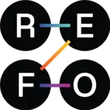
REFO
Refo is a lending-automation platform that helps banks/fintechs run the whole loan journey with ease
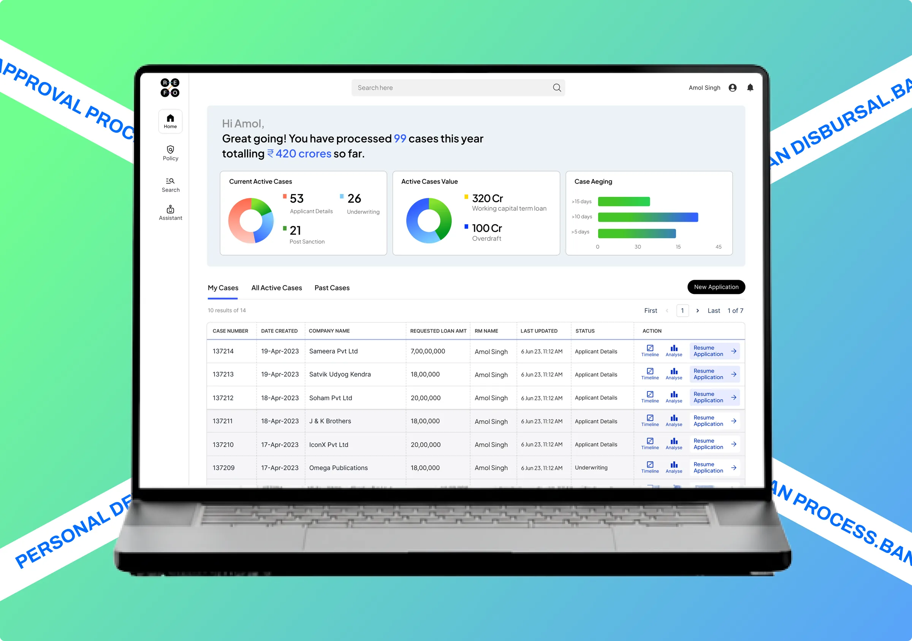
Task
Build a clean, guided dashboard for Refo that turns complex loan approvals into a simple digital journey, reduces errors, and delivers accurate decisions.
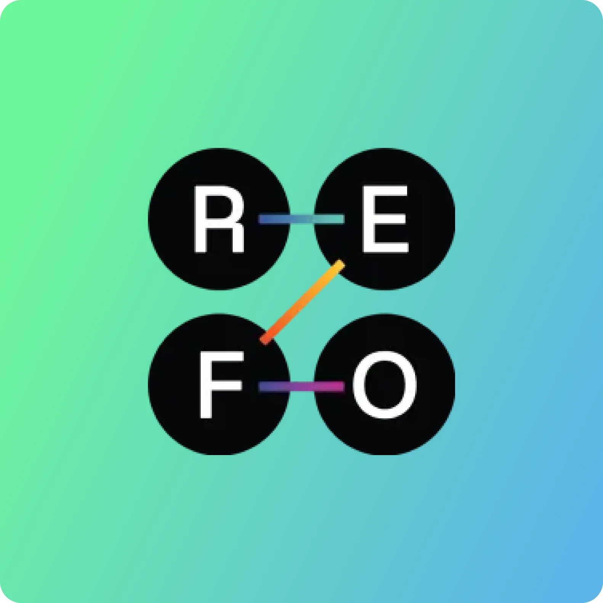
Refo can fetch data seamlessly from places like Databases & Warehouses, Cloud storage & files, analyse it and help in building Robust integrations & data infrastructure
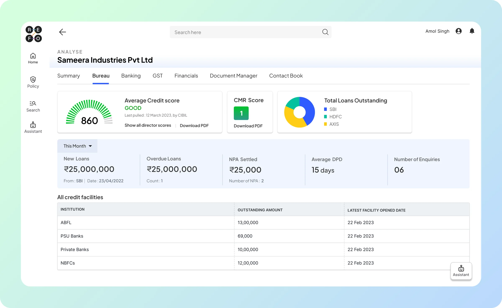
Style Guide
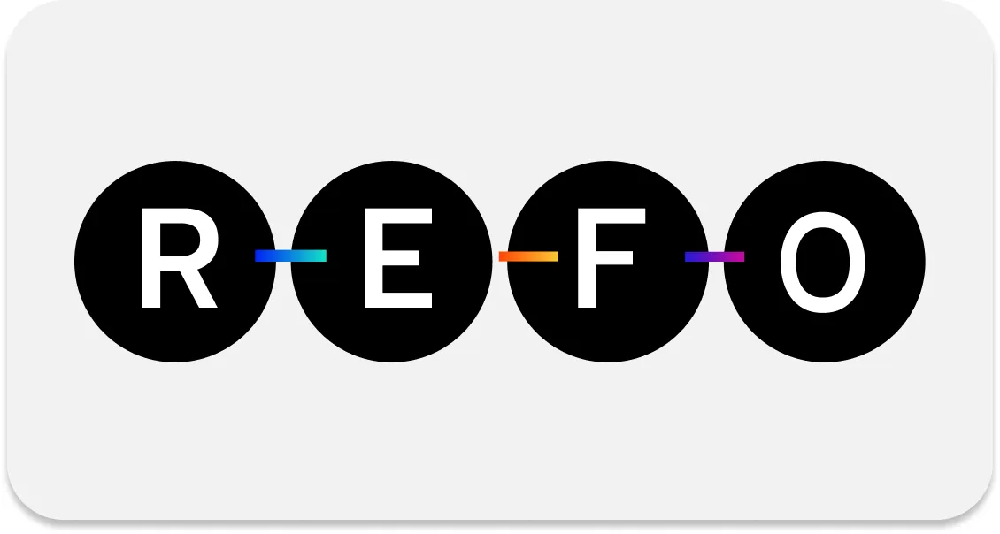
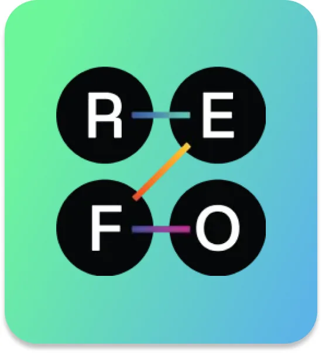
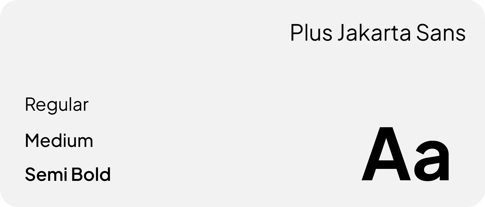
The Faster, Cheaper, Smoother lending automation platform
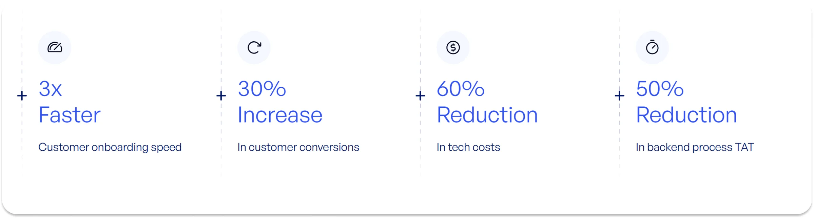
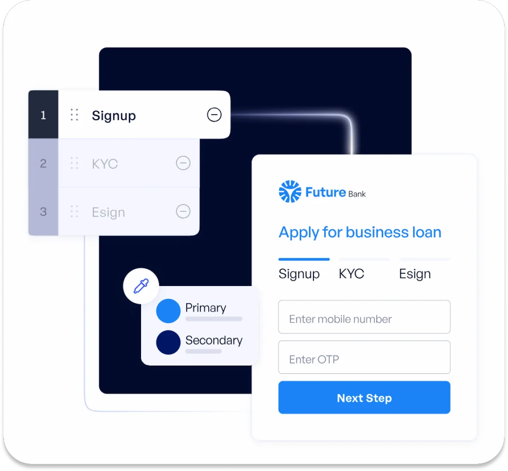
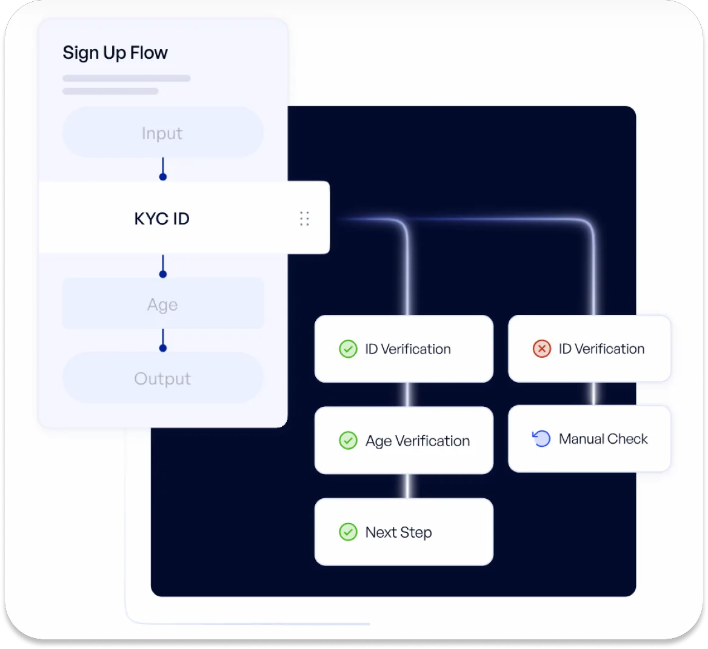
Refo Designs
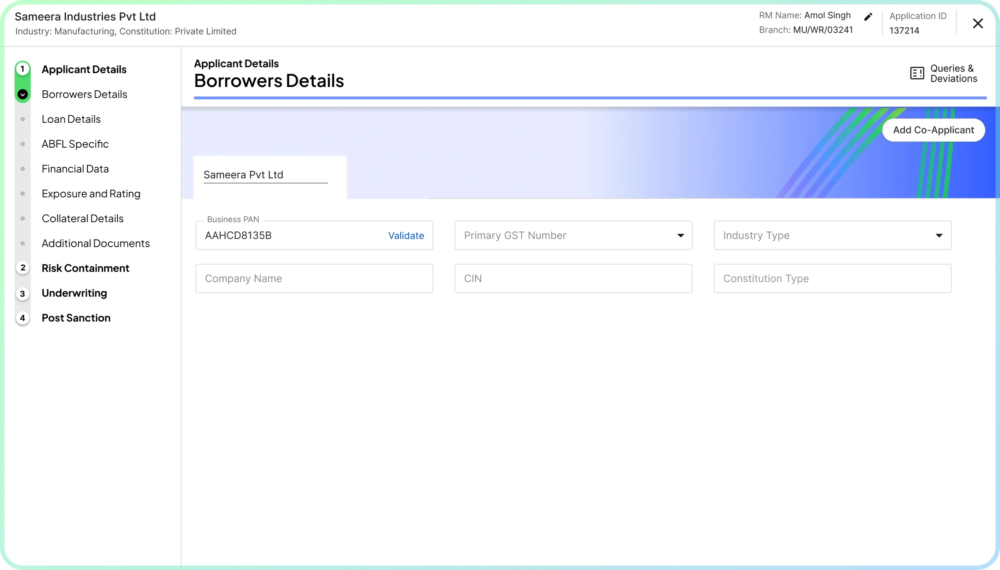
Sleek form with a clear step guided onboarding steps to help banks enter their details easily
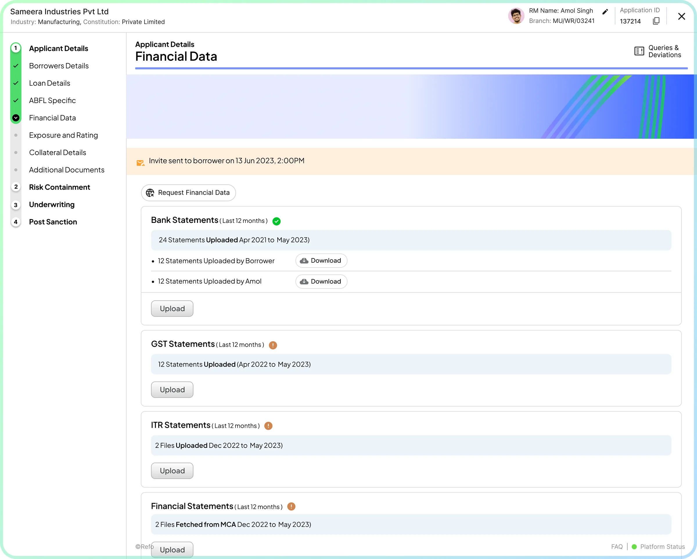
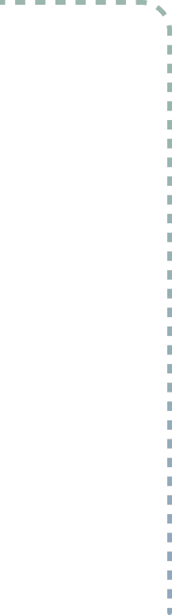
Easy to view progress and steps ,informing the users how long is the process and step they are on
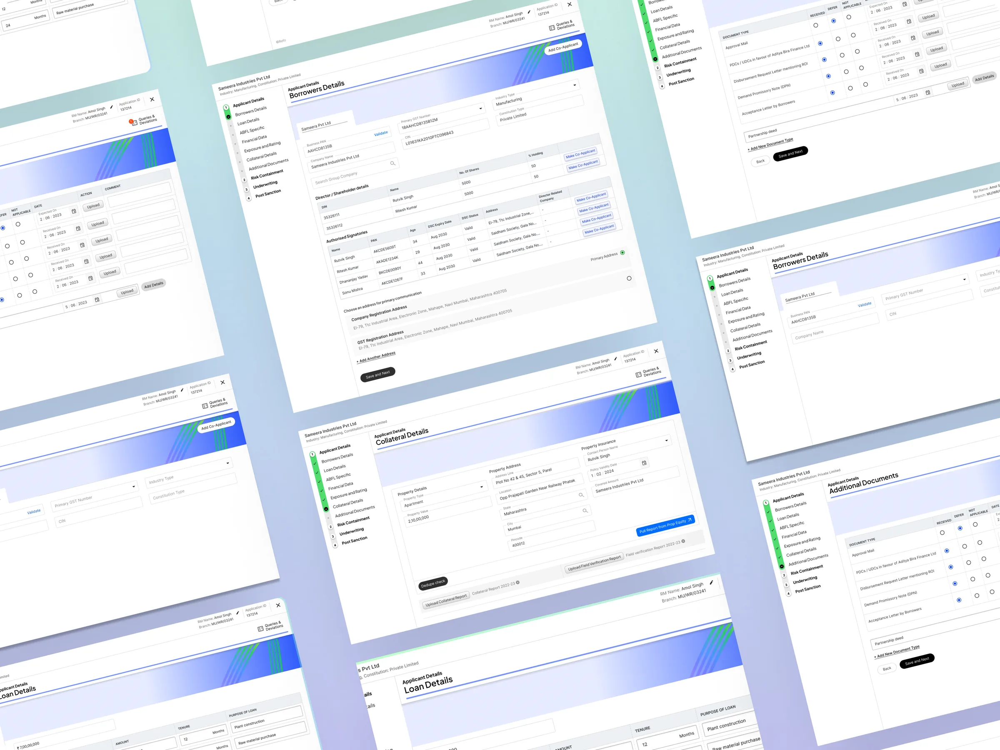
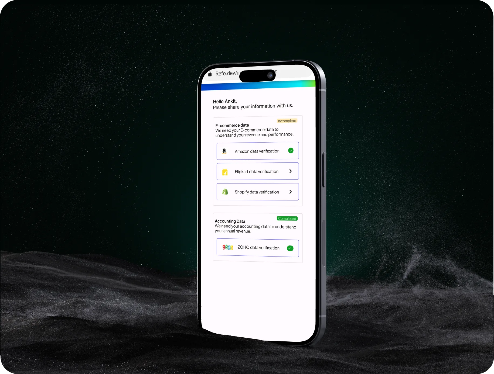
Refo onboarding is omnichannel , meaning the same journey can run across both on app and on the web. The components can also be embedded in the banks ui
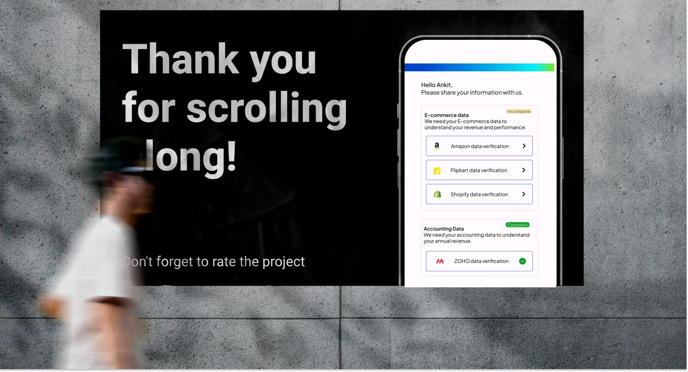